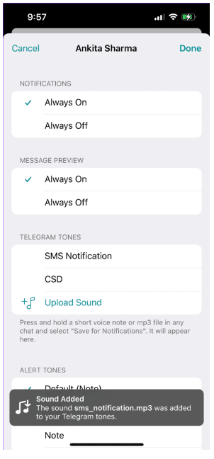

如何在 Telegram 上添加自定义通知声音
在 WhatsApp 强迫人们接受其政策的惨败之后，许多用户确实从 WhatsApp 迁移到了 Telegram。此外，WhatsApp 在特性和功能方面还有很多可以追赶 Telegram 的地方。其中之一是在 Telegram 中使用自定义通知声音的功能。
您可能希望为您的朋友和群组保持不同的通知语气 - 主要是为了知道哪一个是重要的。本指南将向您展示如何在 Telegram 上添加自定义通知声音。不幸的是，此功能不适用于 Web 用户的 Telegram 应用程序。
在 IPHONE 上向 TELEGRAM 添加自定义通知声音
iPhone 用户可以轻松添加自定义通知声音。之前，您需要将私人聊天、群聊和频道添加到例外列表中。但是，Telegram 为您提供了为每个联系人添加自定义通知声音的选项。
要使用自定义声音，您的 iPhone 需要运行 Telegram 应用程序 v8.7 或更高版本才能查看选项。您可以从 Apple App Store 更新 Telegram 应用程序。然后，按照以下步骤操作。
第 1 步： 打开 Telegram 应用程序。
步骤2： 选择要设置自定义声音的联系人。
步骤 3： 点击联系人姓名以显示更多详细信息。
第 4 步： 点击静音图标。
步骤 5： 从选项列表中选择自定义。
第6步： 点击上传声音。
iCloud 驱动器将在您的屏幕上打开。
步骤7： 选择包含自定义声音的文件夹。
默认情况下，您的声音将存储在“下载”文件夹中。因此，我们选择该文件夹。
步骤8： 选择音频文件。
音频文件将添加到电报铃声中。

步骤 9： 再次选择该文件，将其选为通知声音。
您已成功添加新的通知声音。此外，iPhone 用户还可以访问 Google Drive、OneDrive 或下载文件夹来上传音频文件。按着这些次序。
第 1 步： iCloud 文件夹在屏幕上打开后，点击“浏览”。
您将在“浏览”菜单中看到文件位置。您可以点击“收藏夹”选项下的“下载”。
步骤 2： 点击三个点。
步骤 3：选择编辑选项。
第 4 步： 点击开关以启用 Google Drive 或 OneDrive。
在我们的例子中，我们启用了 Google Drive。
步骤 5： 再次点击您选择的文件夹位置。
第 6 步： 点击打开 Google 云端硬盘。
您可以选择一个或多个您选择的音频文件并设置通知音。
在 ANDROID 上的 TELEGRAM 中添加自定义通知声音
即使 Android 用户也可以为其 Telegram 联系人设置自定义通知音。但是，您需要从Play Store将 Telegram 应用更新到最新版本（至少 v8.6 或更高版本） 。以下是添加自定义声音的步骤。
第 1 步： 打开 Telegram 应用程序。
步骤 2： 选择联系人并点击联系人姓名以显示更多详细信息。
步骤 3： 点击通知。
步骤 4： 从弹出菜单中选择“自定义”。
第 5 步： 点击开关以启用自定义通知。
第 6 步： 点击声音。
第7步： 点击上传声音。
您可以选择从内部存储添加声音或从 Telegram 提供的铃声中选择。您还将看到最近使用的文件。
步骤 8： 选择您喜欢的音调，然后点击蓝色箭头进行确认。
第9步： 添加声音后，点击它以将其用于通知。
您还可以选择自定义该特定联系人的通知振动级别。 iOS 应用程序似乎缺少此功能。
在 WINDOWS 上的 TELEGRAM 中添加自定义通知声音
Windows 版 Telegram 应用程序还允许您为联系人分配自定义通知声音。您可以从Telegram 官方网站或Windows 版 Microsoft Store下载该应用程序。
以下是使用 Windows 应用程序上传音频文件的方法。
第 1 步： 打开 Telegram 应用程序。
步骤 2： 选择联系人并单击其姓名。
第 3 步：单击“通知”。
第四步： 点击选择声音。
第5步： 单击“上传声音”。
您将被重定向到“下载”文件夹。
步骤 6： 选择您选择的音频文件。
第7步： 单击“打开”。
步骤 8： 添加文件后，选择它并单击“保存”。
Telegram 将为联系人分配自定义通知声音。您可以从系统的任何文件夹中选择该文件。